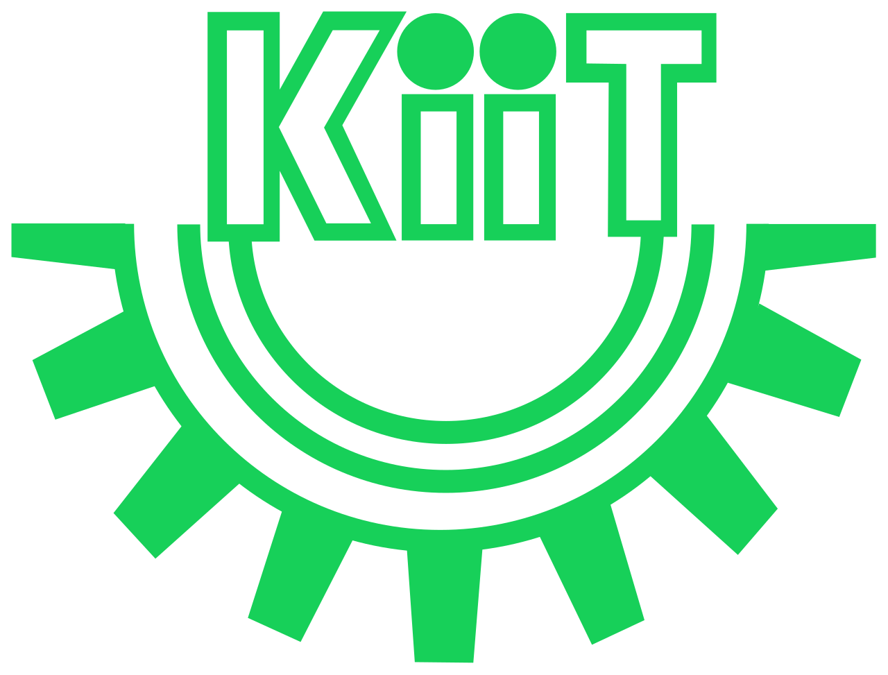
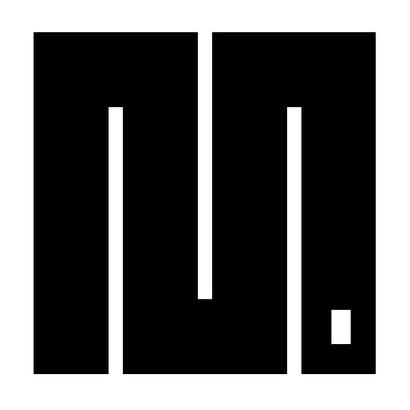
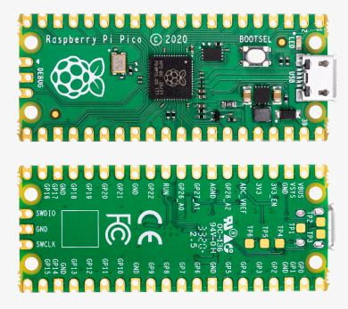

Micropython🐍 + Raspberry pi🥧 pico
🗓️10th March 2024

A brief primer to embedded systems
- Sensing🌡️ ↝ get some data from environment
- Decision Making⚙️ ↝ decide upon that data
- Actuating 🦾 ↠cause some effect to the environment
What's micropython?
MicroPython is a lean and efficient implementation of the Python 3 programming language that includes a small subset of the Python standard library and is optimised to run on microcontrollers and in constrained environments. 🔗
😃Why someone might use micropython?😃
- Familiarity and ease of use: Python's simple syntax, readability, and extensive libraries make it an excellent choice for beginners and experienced developers alike.
- Rapid prototyping: With its small footprint and quick compile times, Micropython allows for faster iteration and testing of ideas.
- An active community contributes to the development and expansion of libraries, making it easier to find solutions for various applications.
😟Why someone might NOT! use micropython?😟
- Performance Limitations: Compared to lower-level languages like C or C++, MicroPython can have performance overhead due to its interpreted nature, making it less suitable for performance-critical applications.
- Resource Constraints: MicroPython's runtime and libraries may consume more memory and storage space compared to bare-metal programming, which could be a concern for resource-constrained devices.
- Some hardware platforms may have limited or incomplete support for MicroPython, leading to compatibility issues or reduced functionality compared to native SDKs or frameworks.
- Limited Libraries: While MicroPython has a growing ecosystem, it may lack certain libraries or features available in other languages, requiring developers to implement functionality from scratch or port existing libraries.
Raspberry Pi Pico🤔
The Raspberry pi pico 🔗 is a microcontroller development board released by the raspberry pi foundation unlike previous raspberry pi this board isn't a full blown linux capable computer per se but intended towards embedded systems, IoT etc.
- At its core it has a RP2040 microcontroller.
- pico boasts an open source software stack as well hardware.
- It is reasonably affordable.
RP2040: The âï¸starâï¸ of the show

- Dual-core ARM Cortex-M0+: Provides multitasking capabilities and efficient processing.
- 133MHz Clock Speed: Offers high-speed operation for various applications.
- 264KB SRAM: Supports ample data storage during execution.
- Programmable IO (PIO): Enables flexible and precise GPIO control.
- Rich Peripheral Interfaces: Includes SPI, I2C, UART, PWM, and ADC for versatile connectivity.
- Awesome documentation.
Let's have some python
Now behold...
Let's have some micropython🐍🔥
We will be using a free online simulator for raspberry pi pico and micropython, wokwi.com
Visit https://wokwi.com/projects/new/micropython-pi-pico to get started.
Documentation for wokwi here.
Example 1
binary counter leds something
- 4 leds representing 4 places of a binary number
- a button to trigger an increment
- each button press increases the counter by 1 and the leds represent the number in binary form
- upon reaching the max value of 4 digit binary number (16), reset counter
My implementation here.
Example 2
Installing an external library for 1602 I2C LCD
- Install a library in micropython to handle I2C LCDs
- https://github.com/T-622/RPI-PICO-I2C-LCD
- And play around!
My implementation here.